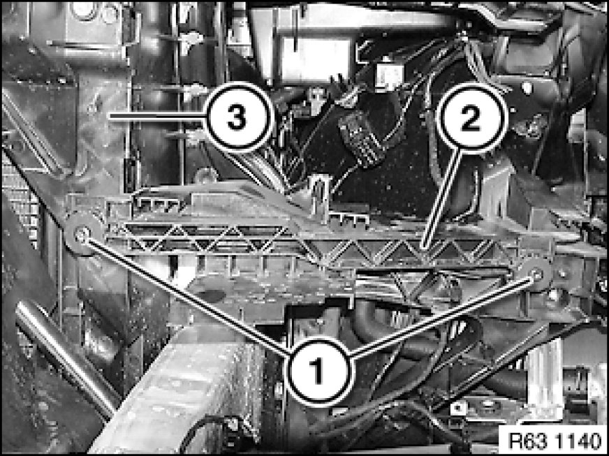

Replacing a Lower Holder for Headlight Mounting
63 12 950 - Replacing a lower holder for headlight mounting

Necessary preliminary tasks:
- Remove headlight Removing and Installing/Replacing Left Headlight (Xenon Headlight)

Release screws (1). Tightening torque 63 12 4AZ [1][2]Headlamp.
Remove holder (2) from front panel (3).
Installation:
Screws (1) serve to adjust gap dimensions.
Check gap dimensions and if necessary adjust.